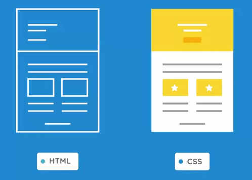

70 Cơ bản về HTML và CSS
70.1 HTML
70.1.1 HMTL là gì ?
Khái niệm
HTML là tên viết tắt của HyperText Markup Language: ngôn ngữ đánh dấu siêu văn bản
Hypertext (siêu văn bản): là một đoạn text bất kì nhưng có chứa link đến một nguồn thông tin khác (như một đoạn văn bản khác, một địa chỉ website, hình ảnh, âm thanh…)
HTML là cầu nối giao tiếp giữa người dùng và trình duyệt, giúp trình duyệt hiểu được cách thức hiển thị của trang web.
**HTML** giống như bộ xương của 1 website, giúp chúng ta xác định được bố cục của website bằng cách đánh dấu bằng các thẻ (Tag)Một tài liệu HTML được tạo bởi các HTML element và được quy định bằng các cặp thẻ (tag) (ví dụ <strong>) thường sẽ bao gồm 1 cặp là thẻ mở và thẻ đóng, tuy nhiên cũng có 1 số thẻ không có thẻ đóng .
Một file html thường được lưu lại dưới đuôi .htm hoặc .html, việc đọc html sẽ do trình duyệt đảm nhận
Vai trò của HTML trong website

VD 1 website bình thường có thể được tạo bởi các ngôn ngữ:
HTML: xây dựng cấu trúc và định dạng các siêu văn bản
CSS: định dạng các siêu văn bản thô từ HTML thành website có bố cục, màu sắc, ảnh nền…
Javascript: Tạo các sự kiện tương tác với người dùng (VD: click chuột vào 1 ảnh thì phóng to)
PHP: Xử lý và trao đổi dữ liệu từ máy chủ đến trình duyệt
MySQL: quản trị CSDL
70.1.2 Cấu trúc một đoạn HTML
Cấu trúc cơ bản
```{html}
<tag> Nội dung khai báo </tag>
```Ngoài ra trong thẻ có thể chứa thuộc tính, sẽ đặt trong thẻ mở đầu. VD:
```{html}
<form action="https://vnexpress.net"> </form>
```Note: Những ký tự nằm giữa dấu <!-- và dấu --> sẽ được coi là comment và trình duyệt sẽ bỏ qua không đọc.
Các tag HTML quan trọng
Để soạn thảo văn bản HTML, chúng ta dùng Sublime Text:
Định dạng Text:
Phân đoạn:
```{html}
<!-- Comment: thẻ p dùng để đánh dấu đoạn văn,
tách riêng với những đoạn text bình thường-->
<p>Đoạn văn bản</p>
<!-- Comment: br là thẻ đơn, nên bạn không cần thẻ đóng -->
Xuống dòng với <br>
<!-- Comment: trích dẫn từ nguồn khác -->
<blockquote>"Tôi chuẩn man" ~ Cao Thái Sơn</blockquote>
```70.1.3 Cấu trúc 1 file HTML cơ bản
Một file html bao gồm 4 yếu tố chính:
Khai báo loại tài liệu html (DOCTYPE)
Thẻ đóng và mở tài liệu HTML, toàn bộ nôi dung website được bao bọc trong cặp thẻ
<html></html>Thông tin website nằm trong cặp thẻ
<head></head>- khai báo thông tin website, tên website, khai báo CSS, các đoạn Javascript và 1 số thông tin khác. Thông tin trong phần này thường sẽ không hiển thị lên trình duyệt.Nội dung website nằm trong cặp thẻ
<body></body>- đây là toàn bộ nội dung của website, phần sẽ hiển thị lên trình duyệt.
VD 1 cây HTML:
```{html}
<!DOCTYPE html>
<html>
<head>
<title>Đây là tiêu đề </title>
<!-- Thông tin sẽ bị ẩn -->
</head>
<body>
<b>in đậm </b>
<i>in nghiêng </i>
</body>
</html>
```70.1.3.1 Các thẻ khai báo thông tin website cơ bản.
Khai báo tên tài liệu với cặp thẻ <title>
Cặp thẻ <title></title> có tác dụng khai báo tên tài liệu của bạn đang soạn, thẻ này giúp hiển thị tên của tài liệu trên trình duyệt đồng thời các search engine như Google cũng dựa vào tên này để tìm kiếm tài liệu
VD chúng ta đặt nội dung trong thẻ title là <title>File thực hành html - anhnt67</title> thì khi lên trình duyệt sẽ hiển thị như sau:

Khai báo metadata với thẻ <meta>
Thẻ này khai báo metadata trong tài liệu html như mô tả, tên tác giả, bảng mã sử dụng. Thẻ này khá đặc biệt vì không có thẻ đóng mà sẽ có dấu /> ở cuối cùng
Thẻ <meta> luôn được khai báo kèm ít nhất là 1 thuộc tính và thuộc tính đó phải có giá trị.
Thuộc tính charset
Khai báo cho trình duyệt biết bảng mã ký tự siêu văn bản bên trong tài liệu, hầu hết hiện nay đều sử dụng bảng mã UTF-8 cho mọi ngôn ngữ
<meta charset="utf-8" />
Thuộc tính name
Phải khai báo đồng thời 2 thuộc tính name và content, trong đó content thiết lập nội dung cho thuộc tính name. VD:
<meta name = "auto" content = "Nguyễn Tuấn Anh" />
Một số thuộc tính name sẵn có:
author: khai báo tên tác giả của tài liệudescription: nhập mô tả tài liệukeyword: nhập từ khóa tìm kiếm trên các website tìm kiếm.
```{html}
<head>
<title>File thực hành html - anhnt67</title>
<meta charset = "utf-8" />
<meta name = "author" content = "Nguyễn Tuấn Anh" />
<meta name = "description" content = "File training html - DBS AAD">
<meta name = "keywords" content = "hoc html, DBS aad, training">
<!-- Thông tin sẽ bị ẩn -->
</head>
```70.1.3.2 Các thẻ định dạng chữ viết và văn bản
Tiêu đề và đoạn văn bản
Tiêu đề (Headline) được định nghĩa bằng thẻ <h1> đến <h6>
See the Pen xyNZEY by Tuan Anh Nguyen (@atula21592) on CodePen.
Đoạn văn bản (Paragraph) được khai báo bằng cặp thẻ <p></p>, văn bản nằm trong đoạn văn bản này sẽ được coi là 1 đoạn văn bản, khi kết thúc 1 đoạn văn bản và sang 1 đoạn văn bản khác thì sẽ được cách nhau với 1 tỷ lệ nhất định. VD
```{html}
<body>
<p>Đây là 1 đoạn văn bản, khai báo bằng thẻ <code><p></code></p>
<p>Đây cũng là 1 đoạn văn bản nhé</p>
</body>
```Các thẻ định dạng chữ viết
See the Pen GYaora by Tuan Anh Nguyen (@atula21592) on CodePen.
70.1.4 Tạo danh sách với HTML
Trong HTML có ba kiểu danh sách (list type) đó là kiểu sắp xếp (ordered list), kiểu không sắp xếp (unordered list) và kiểu danh sách mô tả (description list). Cụ thể:
Kiểu sắp xếp (Ordered List): Là kiểu hiển thị một danh sách mà các mục con của nó được sắp xếp theo thứ tự bằng số hoặc chữ cái.
Kiểu không sắp xếp (Unordered List): Là kiểu hiển thị danh sách mà các mục con của nó sẽ không được sắp xếp theo thứ tự mà chỉ được đánh dấu bằng một ký tự đặc trưng.
Kiểu mô tả (Description List): Là kiểu hiển thị danh sách mà các mục con của nó sẽ không được đánh dấu thứ tự, nhưng sẽ có kèm theo một đoạn miêu tả.
```{html}
<!-- Ordered list -->
<ol>
<li>Mục con 1</li>
<li>Mục con 2</li>
<li>Mục con 3</li>
<li>Mục con 4</li>
<li>Mục con 5</li>
</ol>
<p>Một kiểu hiển thị khác của Ordered List</p>
<ol type="I">
<li>Mục con 1</li>
<li>Mục con 2</li>
<li>Mục con 3</li>
<li>Mục con 4</li>
<li>Mục con 5</li>
</ol>
<!-- Unordered list -->
<ul>
<li>Mục con 1</li>
<li>Mục con 2</li>
<li>Mục con 3</li>
<li>Mục con 4</li>
<li>Mục con 5</li>
</ul>
<p>Một kiểu hiển thị khác của Unordered List</p>
<ul style="list-style-type: square">
<li>Mục con 1</li>
<li>Mục con 2</li>
<li>Mục con 3</li>
<li>Mục con 4</li>
<li>Mục con 5</li>
</ul>
<!-- Description list -->
<p>Một website gồm có</p>
<dl>
<dt>HTML</dt>
<dd>- khung xương của website.</dd>
<dt>CSS</dt>
<dd>- bộ da của website</dd>
<dt>Javascript</dt>
<dd>- bộ cánh của website</dd>
<dt>Ngôn ngữ server-side (ASP.NET, PHP, RUBY,..)</dt>
<dd>- linh hồn của website</dd>
</dl>
<!--Xếp chồng danh sách -->
<ul>
<li>WordPress
<ul>
<li>WordPress Themes</li>
<li>WordPress Plugin</li>
</ul>
</li>
<li>Front-end
<ul>
<li>HTML</li>
<li>CSS</li>
<li>Javascript (jQuery, AngularJS,..)</li>
</ul>
</li>
</body>
```70.1.4.1 Tạo liên kết với html
```{html}
<a href="http://vnexpress.net">Báo hay nhất Việt Nam</a><br>
<!-- Mở liên kết trong tab mới -->
<a href="http://vnexpress.net" target ="_blank">Báo hay nhất Việt Nam</a>
```70.1.5 Chèn ảnh vào html
```{html}
<img src="C:\Users\anhnt67\OneDrive - VPBank\HTML-CSS\Image\htmlcssjava.png", alt = "Đây là ảnh">
```70.2 CSS
70.2.1 CSS là gì
CSS là chữ viết tắt của Cascading Style Sheets , là ngôn ngữ được sử dụng để tìm và định dạng lại các phần tử được tạo ra bởi html. Hiểu đơn giản, nếu HTML đóng vai trò định dạng các phần tử trên website như việc tạo ra các đoạn văn bản, các tiêu đề, bảng,…thì CSS sẽ giúp tạo thêm “phong cách” cho các phần tử HTML đó như đổi màu sắc trang, đổi màu chữ, thay đổi cấu trúc,…

Cấu trúc một đoạn CSS
Một đoạn css bao gồm 4 phần:
```{css}
vùng chọn {
thuộc tính : giá trị;
thuộc tính: giá trị;
.....
}
```Đầu tiên khai báo vùng chọn, sau đó các thuộc tính và giá trị sẽ nằm bên trong cặp dấu ngoặc nhọn {}.
70.2.2 Nhúng CSS vào website
Có 2 cách để nhúng file css vào file html:
- Inline Styles: Nhúng trực tiếp vào tài liệu HTML thông qua cặp thẻ
<style> </style>. - External Styles: Tạo một tập tin .css riêng và nhúng vào tài liệu HTML thông qua cặp thẻ .
Trong đó, Inline Styles thích hợp với việc chèn một số đoạn css ngắn - trình duyệt không mất nhiều thời gian để load file css. Còn External styles thích hợp khi cần chèn nhiều đoạn CSS.
70.2.3 Vùng chọn trong CSS
Vùng chọn là khu vực mà bạn muốn áp dụng các quy tắc CSS. Ví dụ bạn muốn tăng kích thước font chữ của các thẻ h1 thì vùng chọn của bạn sẽ là h1.
VÙng chọn của CSS có thể là bất cứ thứ gì, từ thẻđến các thẻ con bên trong nó
Vùng chọn theo tên thẻ
Chọn toàn bộ các tên thẻ được gọi, nhược điểm là toàn bộ các thẻ HTML trong website được chọn trong CSS đều biến đổi theo
```{css}
-----Format cho vùng h1
h1{
font-family: Arial;
color: yellow
}
```Vùng chọn theo ID
Chúng ta có thể chọn một phần tử cụ thể dựa vào giá trị của thuộc tính id trong thẻ HTML, lưu ý là mỗi phần tử phải mang một id riêng biệt không trùng nhau.
Khi gọi theo ID trong CSS thì nó phải có # đặt trước tên id để phân biệt với các loại vùng chọn khác
VD:
```{css}
#post-title {
color:
```Vùng chọn theo class
Khác với ID, class có thể dùng nhiều lần cho 1 phần tử. Khi gọi class trong CSS thì dùng cấu trúc .tênclass
Ví dụ:
```{css}
.a{
text-align: right;
}
```Vùng chọn thứ cấp
Với vùng chọn này, chúng ta có thể chọn 1 phần tử con trong 1 phần tử html nào đó
Ví dụ:
```{css}
#menu li {
color: green;
list-style-type: square;
}
```70.2.4 Thuộc tính trong CSS
Các thuộc tính cho text
Các thuộc tính cơ bản nhất:
- text-align: Căn lề văn bản.
- text-decoration: Trang trí văn bản.
- text-indent: Thêm khoảng trống trước văn bản theo chiều ngang từ trái sang phải.
- text-shadow: Thêm bóng cho văn bản.
- text-transform: Tùy chỉnh việc hiển thị chữ in hoa.
Các thuộc tính cho font chữ
- Đặt font chữ bằng
font-family - Thiết lập chữ viết được hiển thị dưới dạng in nghiêng hoặc bình thường, có 3 giá trị
normal,italic,oblique - In đậm bằng
font-weight - Thay đổi kích thước chữ bằng
font-size - Màu chữ bằng
color